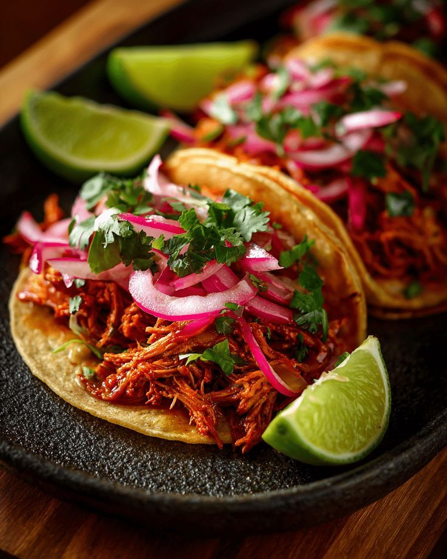

Cochinita pibil is one of the most emblematic dishes of the Yucatán Peninsula. It is particularly significant because it represents both the survival of Maya cooking techniques and the transformation of Indigenous cuisine following European contact.
The word pibil is related to the Maya pib, an underground or earth oven. The traditional cooking technique consists of placing food in a pit containing heated stones, covering it, and allowing it to cook slowly underground.
The technique itself is pre-Hispanic. However, the modern dish cannot literally have existed in its present form before European contact because domesticated pigs were introduced to the Americas by Europeans.
Before pork became available, Maya preparations cooked using similar underground techniques could use local animals such as deer, wild turkey, peccary, or other game. Mexican government sources therefore describe modern cochinita pibil as a form of culinary syncretism, combining a Maya cooking tradition with pork introduced during the colonial period.
The dish is also associated historically with Hanal Pixán, the Maya tradition of commemorating and feeding the souls of the dead, celebrated around the end of October and beginning of November.
Traditional or traditional-style cochinita pibil generally contains:
Some recipes also include:
The characteristic red-orange color comes largely from achiote, sour orange provides acidity and a distinctive citrus flavor that balances the earthy, slightly peppery qualities of the achiote.
Achiote paste is diluted with sour orange juice and mixed with garlic, salt, oregano, pepper, and other spices.
The pork is thoroughly coated with the achiote mixture and allowed to marinate for several hours, traditionally often overnight. The marinade seasons the meat and gives it its characteristic color and aroma.
Banana leaves are briefly heated over a flame or softened with hot water. This makes them flexible enough to fold around the meat.
The marinated pork and its liquid are enclosed inside the banana leaves.
Traditionally, the package is placed inside a pib, where heated stones provide sustained heat and the covered pit creates an enclosed cooking environment.
During slow cooking, the meat becomes extremely tender while the banana leaves help retain moisture and contribute aroma.
In contemporary kitchens, the dish is frequently reproduced by tightly wrapping the pork in banana leaves and cooking it slowly in a conventional oven. Official Yucatecan recipes commonly suggest several hours of marination followed by roughly two hours of covered oven cooking, although the exact duration depends on the amount and cut of meat.
Once sufficiently tender, the pork is shredded and mixed with some of its cooking juices.
It is traditionally served with fresh corn tortillas and pickled or marinated red onions. Habanero chili is a common accompaniment. A Yucatecan salsa commonly associated with the dish is xnipec, which may combine red onion, sour orange, habanero chili, and other ingredients.
Cochinita pibil is an excellent example of how cuisines evolve without completely abandoning their older foundations.
Its earth-oven technique, achiote, regional seasonings, and Maya cultural context preserve Indigenous elements, while pork reflects the biological and culinary exchanges that followed the Spanish conquest.
For this reason, describing cochinita pibil simply as an “ancient Maya pork dish” is historically inaccurate. A more precise interpretation is that modern cochinita pibil emerged from the adaptation of an ancient Maya pibil cooking tradition to ingredients introduced during the colonial period.